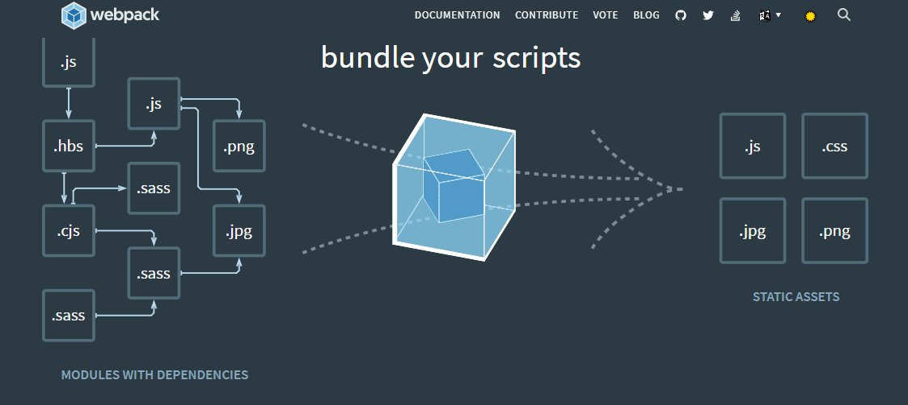
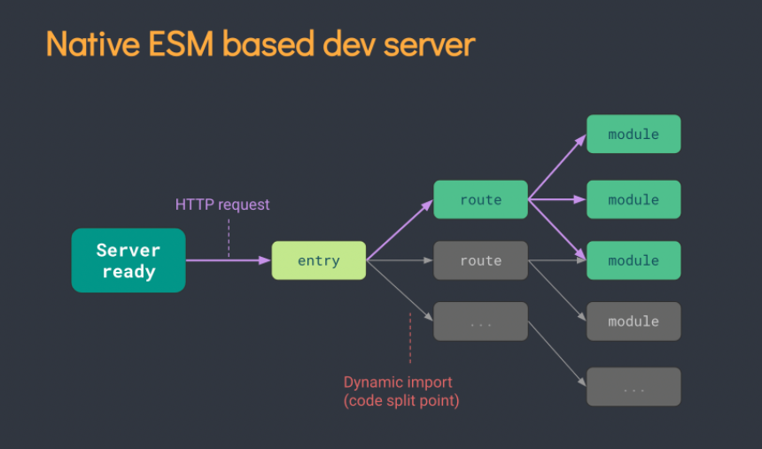
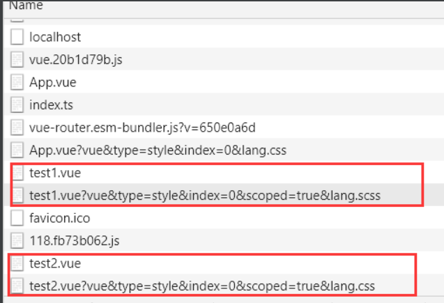
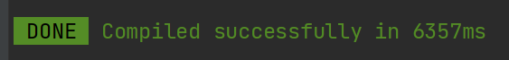
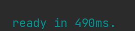
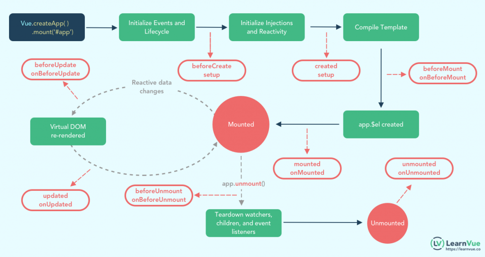

聊一聊
VUE3 🎉🎉🎉
分享By 卢方舟
目录
一、项目创建方式
二、生命周期
三、API的变化
四、响应性Api
一、两种创建方式
- vue-cli4+
- vite 2.0
webpack-a

webpack-b

vite-a

vite-b

速度对比
-
vue-cli4

- vite 
未来
二、生命周期
vue实例从创建到销毁的过程
生命周期变化

三、API的变化
- VUE2 - options Api
- VUE3 - composition Api
一个功能分散到了不同的vue的配置项中
代码根据逻辑功能来组织的，一个功能的所有api会放在一起（高内聚，低耦合）
options Api
缺点：
- 光标反复横跳
- mixin命名重复
- this的多次使用
- 功能多了之后不易维护
composition Api
四-响应性基础Api
- ref
- reactive
- toRefs
- readonly
- isProxy
.
.